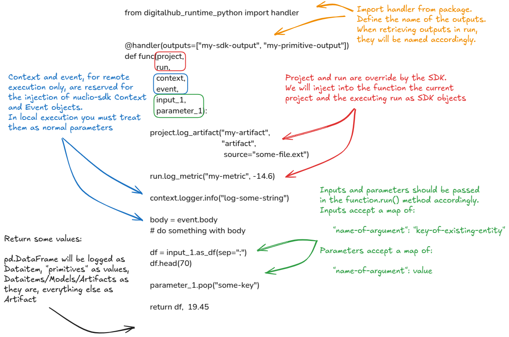

Define a python function
You can declare a generic python function as usual with the def keyword.
Anatomy of a function

A python function can be defined as follows:
from digitalhub_runtime_python import handler
@handler(outputs=["my-sdk-output", "my-primitive-output"])
def func(project,
run,
context,
event,
input_1,
parameter_1):
project.log_artifact("my-artifact",
"artifact",
source="some-file.ext")
run.log_metric("my-metric", -14.6)
context.logger.info("log-some-string")
body = event.body
# do something with body
df = input_1.as_df(sep=";")
df.head(70)
parameter_1.pop("some-key")
return df, 19.45
It is not mandatory to provide any arguments or return values. The following function is also permitted:
The defined function will be the entrypoint of your code when it is specified as handler in the run execution parameters.
With the python runtime, comes a set of tools and utilities to handle inputs and outputs of a function and also manage platform objects. Here follows a list of these utilities:
- Reserved arguments in function signature
- Inputs and parameters definition
- Handler decorator and outputs definition
- Init function for remote execution
Reserved arguments
When you define a function you can declare some arguments. We reserve a small set of args for the runtime to use. In particular, we inject at runtime the following arguments:
project: The current contextProjectobject.run: The current runningRunobject.context: Thenuclio contextobject (remote-execution only).events: Thenuclio eventsobject (remote-execution only).
Local execution nuclio context and events objects
Note that if you execute your function locally, context and events must be passed as inputs/parameters in function.run().`
Inputs and parameters
Inputs and parameters are used to pass data to the function. They map the name of a function argument.
The inputs and parameters are mapped to the inputs and parameters arguments of the function.run() method, and are included in the Run object's spec.
Inputs must be the key of a Dataitem/Artifact/Model object, while parameters can be any python "primitive" value.
# Example with a dataitem
# Define your function and declare di argument as Dataitem,
# while param1 is a string
def func(di: Dataitem, param1: str):
# do something
...
# First you create/get a dataitem
sdk_dataitem = sdk.new_dataitem(...)
# Reference the di argument as key and the dataitem key as value
sdk_function.run(inputs={"di": sdk_dataitem.key},
parameters={"param1": "some value"})
On inputs and parameters distinction
Sometimes it is possible to confuse inputs and parameters in function.run() method. If you encounter the Excepition that tells you that the SDK was unable to parse an entity_key, it is possible that you have passed a parameter as an input.
Handler and outputs
A function can be decorated with the @handler decorator from the digitalhub_runtime_python package.
The decorator is used to map the outputs of the function in the outputs and results attributes of the Run object.
from digitalhub_runtime_python import handler
@handler(outputs=["data", "string"])
def func(di: Dataitem, param1: str):
# do something with di
return pd.DataFrame, "some value"
run = sdk_function.run(inputs={"di": sdk_dataitem.key},
parameters={"param1": "some value"},
...)
# Wait until it finishes ...
run.output("data") # Here you get a Dataitem object
run.result("string") # Here you get a string "some value"
Decoration
You may or may not decorate your function with the @handler decorator you can import from the digitalhub_runtime_python package. If you decorate your function and return something, you need to map the outputs in the decorator to collect named outputs/results, otherwise the SDK will set some placeholder names by default to name the outputs.
Init function
The init function is a function executed by the nuclio wrapper (in remote execution) before the effective execution of the user handler.
A small difference relative to the user defined function handling, is that we override only the context argument at runtime by injecting the nuclio context object as function parameter. The init function can accept some parameters, but it is not mandatory. The parameters are passed by the user at runtime into runs through the init_parameters parameter in function.run().
def init(context, param1, param2):
...
run = sdk_function.run(...,
init_parameters={"param1": "some value",
"param2": "some value"})
You can now check the arguments required to create a Function object and launch a new run.